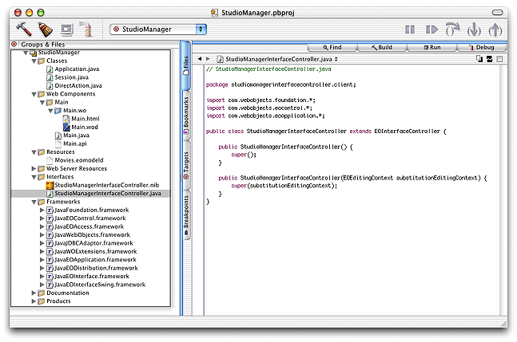
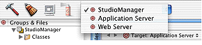

| PATH |

Once you've finished with the assistant, Project Builder creates a project directory named after the project-in this case StudioManager-and populates this directory with an assortment of ready-made files and directories. Figure 2-2 shows Project Builder's main window.
Figure 2-2 Project Builder's main window
Project Builder offers several organization tools that allow you to visually organize all the files a project requires. This allows you to easily locate a project's files in a central repository. It also lets you assign files to specific targets to facilitate the building process.
A group is a collection of related files, similar to folders or directories in a file system. They allow you to collect all of your project's components, resources, classes, frameworks, and even other groups under general categories. However, you are not restricted on the type of file you can put in a group.
When you create a Java Client application, Project Builder creates a default hierarchy with seven major groups. You can modify this organization by adding, removing, or deleting groups, and by moving files between groups:
.java)
that the project uses, such as Application.java, Session.java,
and DirectAction.java. The Java files related
to components, such as Main.java, are located
in subgroups of the Web Components group..eomodeld)
used in the project..nib) needed by the
client application..framework) used by
your project.In this scenario, you can think of StudioManager as the root group, because it contains all other groups.
When a Java Client application is built, two products are created: The client product and the server product. The client product is the client-side application, while the server product is the server-side application. Targets come in two flavors: Build targets and root targets:
These are the targets of a Java Client application:
To switch between a project's targets, you use the target pop-up menu.
The files associated with the Web Server target are the Interface
Builder archive (.nib)
file and the interface controller (.java).
The files are named after the project plus "InterfaceController"
by default; you can choose a different name when the project is created.
In the Interfaces group you will see StudioManagerInterfaceController.nib and StudioManagerInterfaceController.java.
The nib file in a Java Client application is similar to a nib file in a stand-alone WebObjects application. When you create a user interface, information is added to the Java Client nib file so that it can be used to generate Swing interface elements. This information is encapsulated in a Java archive that is loaded onto the client.
In a Java Client application, an interface controller-an EOInterfaceController object-mediates between the user interface and the model objects on the client. When you use Project Builder to create a Java Client project, it automatically generates code for a custom EOInterfaceController subclass and makes an object of this class the owner of the nib file.
In the Model-View-Controller design paradigm, the interface controller plays the role of controller. It has four outlets:
component,
which is preset to the window in the nib file and functions as the "view"
(it can be set to something else)editingContext),
which serves as the "model"controllerDisplayGroup),
a kind of general-purpose display group that contains the interface
controller itself and nothing else; through it applications can
specify user-interface dependencies and can control the interface through
associationsdisplayGroup)
in master-detail interfacesThe server-side project files created by Project Builder are
distributed across several groups. Most notable of these is the
Main component (Main.wo)
in the Main subgroup located in the Web Components group. The Main.html file
contains this generated HTML code:
<HTML> <HEAD> <TITLE>Main</TITLE> </HEAD> <BODY> <CENTER><WEBOBJECT NAME=Applet></WEBOBJECT></CENTER> </BODY> </HTML>
The <WEBOBJECT NAME=Applet> tag
in the HTML code above represents a WOJavaClientApplet component.
Java Client applications use this component to create an applet
(of class com.webobjects.EOApplet) and to
pass this applet several parameters, some standard, such as size
and codebase, and others specific to Java Client applications, such as
channel class and interface-controller class.
The Main.wod file
contains the following default bindings for the WOJavaClientApplet component:
Applet: WOJavaClientApplet {
height = 512;
width = 512;
interfaceControllerClassName = "studiomanagerinterfacecontroller.client.StudioManagerInterfaceController";
useJavaPlugin = YES;
}
Note that Project Builder automatically provides the binding
for interfaceControllerClassName (see "The Interface Controller",
for details).
The WOJavaClientApplet bindings specific to the EODistribution layer are shown in the following table.
| Property | Value |
| useJavaPlugin | If YES, generates HTML that causes Internet Explorer and Netscape browsers to use Sun's Java Plug-in. |
| distributionContext | The EODistributionContext that the applet uses to handle requests from the client. If no binding is specified, WOJavaClientApplet instantiates one with the session's default editing context and sets the session as the delegate of the distribution context and itself as the invocation target. |
| interfaceControllerClassName | The name of the initial EOInterfaceController subclass that is created by the Project Builder Assistant when the project is created. |
| applicationClassName | The name of the EOApplication subclass used for the shared application object. |
| language | The preferred language for the application. This corresponds
to a localized language.lproj directory
in the application's resources. When searching for localized resources,
Java Client first looks in this directory, next English.lproj
(if English is not the preferred language), and finally in the directory
for nonlocalized resources. |
| channelClassName | The class name of the distribution channel to be used by the client, EOHTTPChannel by default. |
A Java Client project includes these other server-side files:
.java)
filesMain.api)See "Customizing Your Project With Assistants" for detailed information on customizing a project.
© 2001 Apple Computer, Inc.